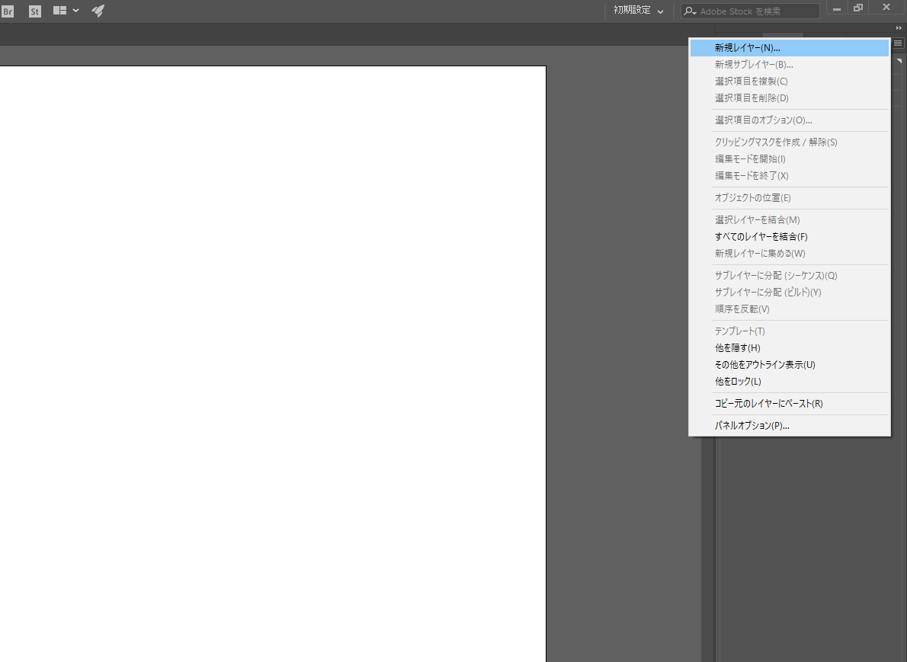
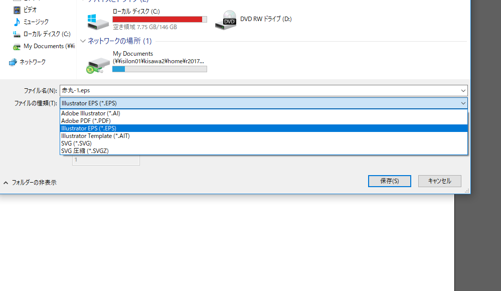

今回は簡単なデータを作り、印刷データを作成する。
UVプリンターは様々なメディアで印刷することが出来る
しかし、メディアに対して綺麗に印刷するためには印刷するデザインと共に「枠」を作り、セットできる準備をしなければならない
１．イラストレーターをを起動する。
2.今回は、新規作成から縦、幅を5センチに設定して作成する。
３．右側の「レイヤー」から「新規レイヤー」を2つ作成。
４．左の項目等を使ってデザインを作成してください。
５．「レイヤー2」の中には赤い丸が入っています。

６．〇をコピー→「貼り付け」でもう1つ〇を作り、赤丸にかぶせる。

「レイヤー3」に先ほどの枠をいれます
８．最後に、〇を覆うように色、線：色なしの見えない□を作りました。
これを「レイヤー1」に入れる。

９．3つのレイヤーに1つずつデータがある状態になります。

レイヤー3「枠」を見えない状態にして保存する（名前：「赤丸」）
＊保存する場合は「EPS」で保存する
次にレイヤー2「赤丸」を見えない状態にして同様に保存する。（名前：「枠」）


UVプリンターを使用するにために必要なことがある。他の印刷機と違い様々なメディアに印刷できるため「高さ」の調整が必要なのである。
また、印刷をする「場所」を確定するために2回の印刷をする
また調節しないとUVプリンターのノズル？が壊れる可能性があるのでかなり重要。
＊修理に結構な￥がかかるらしい…
UVプリンターを起動する
初回印刷時:はじめに、メディアのセットする「場所」を確認する。
＊以前、用意した2つのデータを利用済ます
１．起動したら「SETUP」を押す
２．「メディアをセットしてください」と表示されたら右ボタン（1回）を押し「ジドウケンシュツ」にセット
３．「ENTER」を押すと自動的に台座のみの「高さ」に台座が移動します。
４．台座がセットされたら「ENTER」を3回押しセット完了
１．「Versa Works」がインストールされているPCを利用
ソフトを立ち上げる
２．「枠」のEPSデータをジョブリストにドッラク＆ドロップ→印刷

３．印刷が終了すると「ピーッ」となります
４．台座に「枠」が印刷されました
１．「枠」にメディアが合うようにセットする
＊自動検出の場合、メディアがずれるので後ろに両面テープで固定
＊上記（枠の印刷）と同じ動作をしてください
１、データのドッラク＆ドロップ

２、台座のセット→印刷
３．印刷完了 「枠」のところに印刷されています